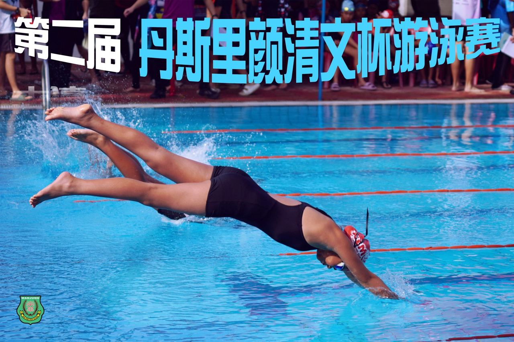
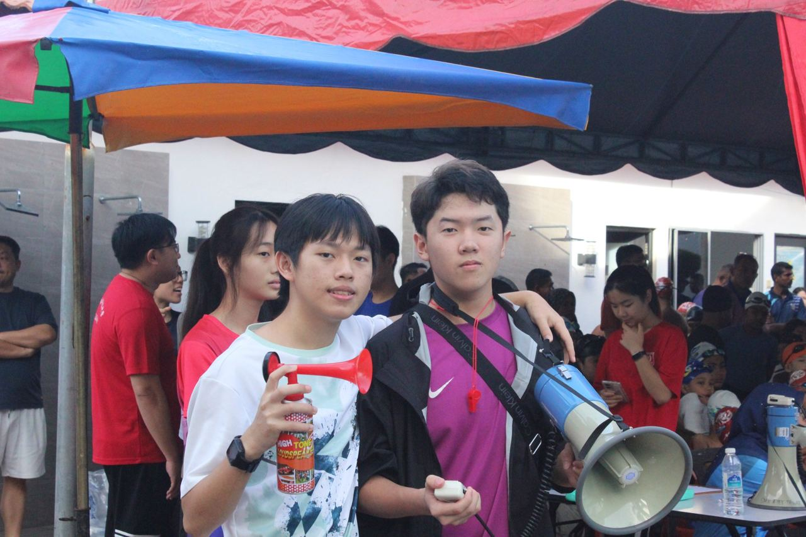
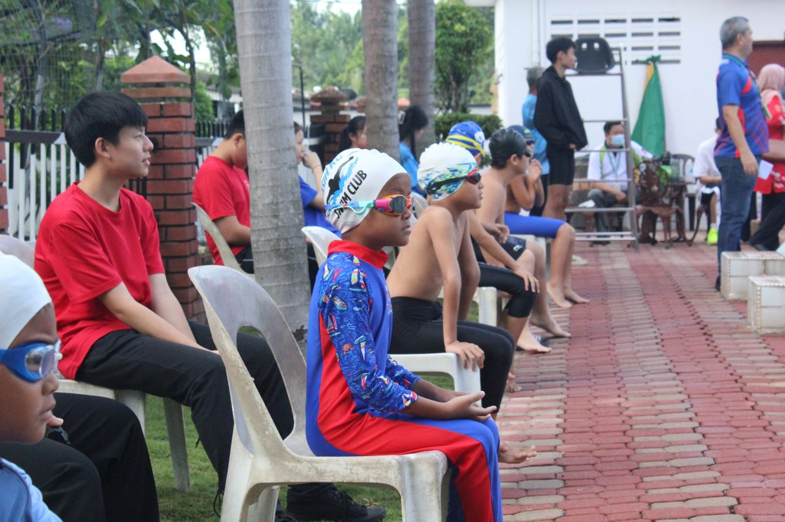
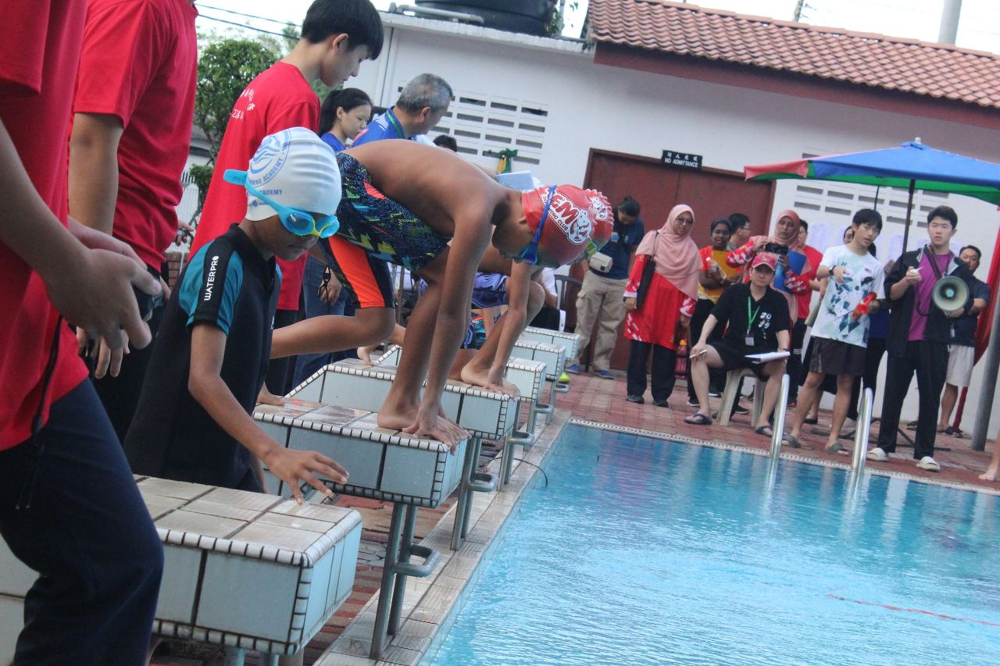
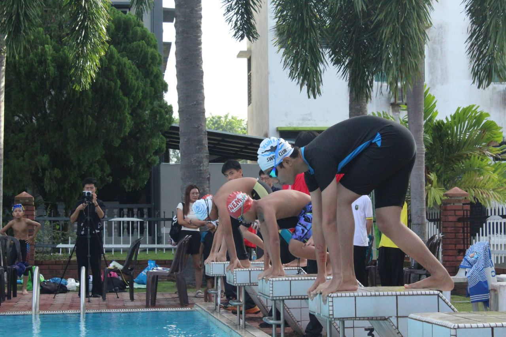
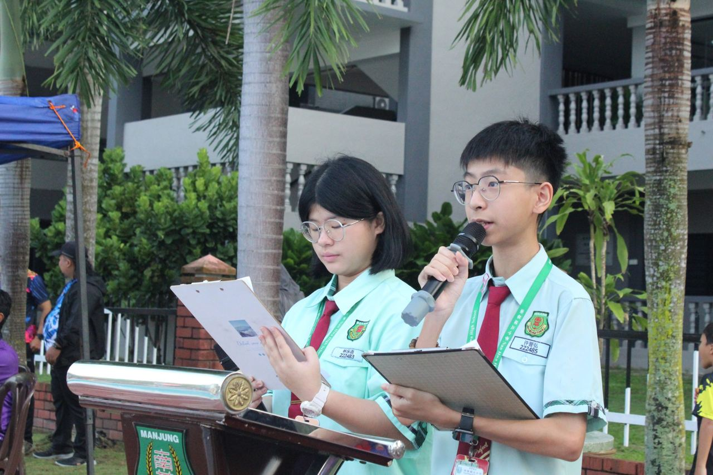
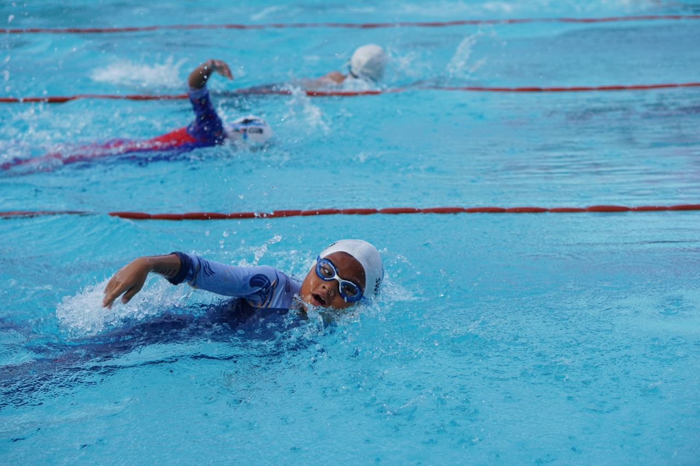
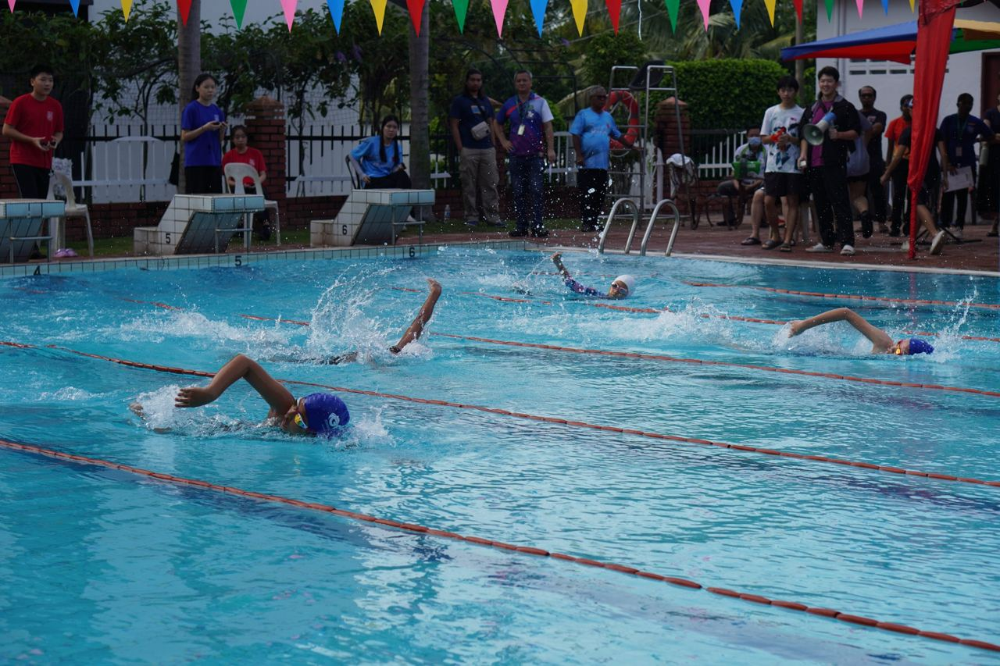

南华独中办丹斯里颜清文杯游泳赛
南华独中办丹斯里颜清文杯游泳赛
16校健儿碧波竞逐
爱大华民德华小德陈施源同学
连破两记录夺最佳运动员
本校日前盛大举办 “2025年第二届 #丹斯里颜清文杯 游泳比赛”。本届赛事规模宏大，共汇聚了曼绒县内 16所 各源流学校的游泳健将共襄盛举。从华小、国小、淡小到私立学校，百余名各族学子在同一片蓝天下，跨越校园围墙，以水为媒，以泳会友，生动诠释了南华独中 “美美与共·天下大同” 的教育资源共享理念。
为了确保比赛遵循“公平、公正、公开”的原则，让每一枚奖牌都经得起考验，本届赛事的裁判团队阵容鼎盛，展现了极高的专业水准。校方特别邀请了多位校外专业人士组成核心裁判团，涵盖技术顾问、线裁判员及发令员等关键职司，以第三方的专业视角确保赛果的客观性。
校长 陈丽冰博士 在致辞中指出，南华独中作为全马最早拥有泳池的学府之一，始终不忘“独中亦是社区一分子”的责任。 “我们开放泳池，不仅是为了比赛，更是为了让教育的资源流动起来。当看到不同肤色、不同校服的孩子们在我们的赛道上并肩破浪，这正是南华推崇的‘共享’精神最美的风景。” 她强调，教育不应有围墙，南华愿意成为社区教育的枢纽，让更多孩子有机会接触水上运动，在挑战中学会坚韧，在互动中学会尊重。
#赛场风云，#破浪前行
来自实兆远中正华小、民德华小、卫理英校（ACS）等校的健儿们如飞鱼般跃入水中。在精准的电子计时与严格的裁判监察下，选手们心无旁骛地劈波斩浪。无论是刷新大会纪录的惊喜瞬间，还是落后时不轻言放弃的坚持，都赢得了现场观众的阵阵喝彩。
第二届丹斯里颜清文杯的圆满落幕，不仅是一次体育成绩的验收，更是一次社区教育力量的凝聚。南华独中以开放的姿态，通过专业的办赛规格，为曼绒县学子搭建了一座通往自信与友谊的桥梁，让“美美与共”的愿景在每一次划水中泛起动人的涟漪。
详细的得奖名单，请参考附图。







